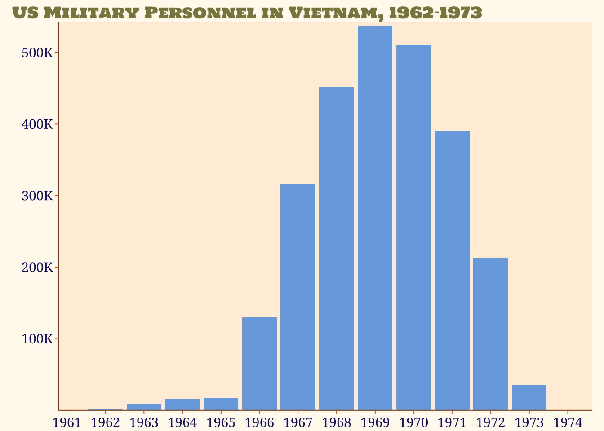

library(tidyverse)── Attaching core tidyverse packages ──────────────────────── tidyverse 2.0.0 ──
✔ dplyr 1.1.4 ✔ readr 2.1.5
✔ forcats 1.0.0 ✔ stringr 1.5.1
✔ ggplot2 3.5.1 ✔ tibble 3.2.1
✔ lubridate 1.9.3 ✔ tidyr 1.3.1
✔ purrr 1.0.2
── Conflicts ────────────────────────────────────────── tidyverse_conflicts() ──
✖ dplyr::filter() masks stats::filter()
✖ dplyr::lag() masks stats::lag()
ℹ Use the conflicted package (<http://conflicted.r-lib.org/>) to force all conflicts to become errorslibrary(ggtext)
library(grafify)
library(showtext)Loading required package: sysfonts
Loading required package: showtextdblibrary(scales)
Attaching package: 'scales'
The following object is masked from 'package:purrr':
discard
The following object is masked from 'package:readr':
col_factorshowtext_auto()
font_add_google("Holtwood One SC", "holt")
font_add_google("Noto Serif", "noto")
theme_set(
theme_void() +
theme(
text = element_text(family = "noto",
color = "midnightblue"),
plot.title = element_markdown(family = "holt",
color = "khaki4"),
plot.title.position = "plot",
plot.caption = element_markdown(size = rel(0.5)),
plot.background = element_rect(fill = "floralwhite",
color = "floralwhite"),
plot.margin = margin(l=10,r=10),
axis.text = element_text(margin = margin(2,2,2,4)),
axis.title.y = element_markdown(angle = 90, margin =
margin(2,2,4,2)),
axis.line = element_line(color = "chocolate4"),
axis.ticks = element_line(color = "chocolate3"),
axis.ticks.length = unit(1, "mm"),
legend.position = "inside",
legend.justification.inside = c(0.98, 0.05),
panel.background = element_rect(fill = "antiquewhite1",
color = "NA")
)
)
read_csv("./us_milper_vn.csv") |>
mutate(year = as_date(paste0(year,"-12-31"))) |>
ggplot() +
geom_col(aes(x = year, y = `US military personnel in Vietnam`), fill = "#79ABE1") +
scale_x_date(limits = c(as_date("1961-06-01") , as_date("1974-01-01")), breaks = "1 year", date_labels = "%Y") +
scale_y_continuous(breaks = c(100000, 200000, 300000, 400000, 500000), labels = label_number(scale_cut = cut_short_scale()), expand = expansion(mult = c(0, 0.01))) +
labs(
title = "US Military Personnel in Vietnam, 1962--1973",
x = "", y = ""
)Rows: 12 Columns: 2
── Column specification ────────────────────────────────────────────────────────
Delimiter: ","
dbl (2): year, US military personnel in Vietnam
ℹ Use `spec()` to retrieve the full column specification for this data.
ℹ Specify the column types or set `show_col_types = FALSE` to quiet this message.